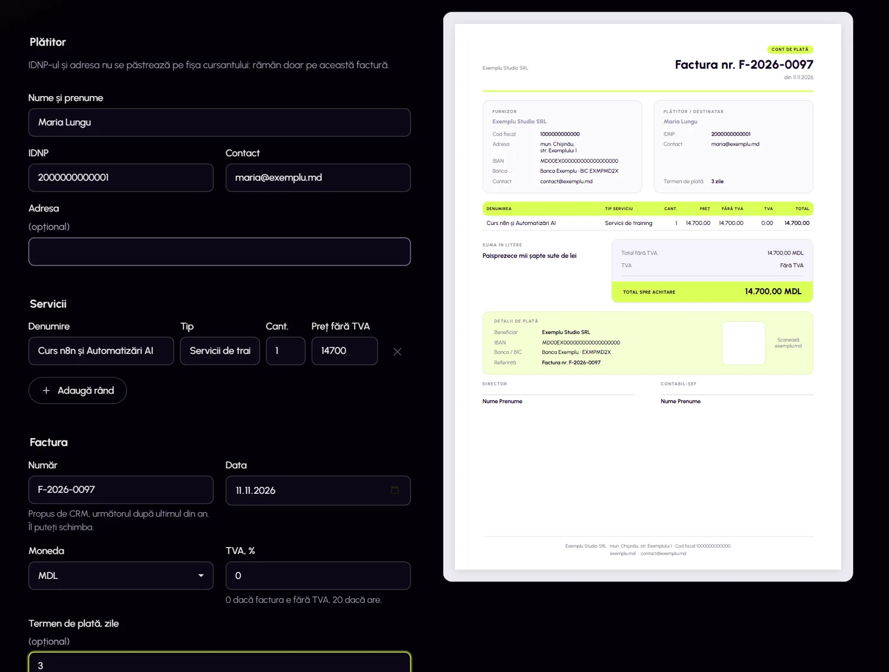

CRM Facturare & monitorizare
Modulul care emite facturi cu PDF, urmărește plățile, trimite remindere și supraveghează site-urile clienților, într-un CRM folosit zilnic de o echipă.
Studiul de caz ↗
Bună, sunt Cristina
Îmi place să transform ideile în soluții digitale bine gândite. Creez workflow-uri complexe în n8n și pagini web, cu accent pe funcționalitate, claritate și utilitate.

Sunt curioasă și îmi asum serios ce fac. Am învățat n8n, cod și baze de date lucrând pe proiecte reale, alături de o echipă și de oamenii care le folosesc.
Am licența în tehnologii ale informației (media 9,77). Am trecut printr-un curs de automatizări AI, un stagiu și apoi un post de dezvoltatoare și mentoră. Înainte am fost asistentă de manager de proiect, așa că știu ce înseamnă un termen și un buget.
noduri în proiectul meu final: un flux principal și 6 sub-fluxuri pentru stoc, facturi, încasări, salarii și KPI.
pull requesturi revizuite, ~36.000 de rânduri
teste automate scrise
slide-uri: lecții în română și rusă, plus un glosar de 71 de termeni
produse într-un magazin WooCommerce
migrări PostgreSQL
Modulul care emite facturi cu PDF, urmărește plățile, trimite remindere și supraveghează site-urile clienților, într-un CRM folosit zilnic de o echipă.
Studiul de caz ↗
Automatizează operațiunile unei firme mici: facturi cu PDF, stoc cu aprobare în Slack, încasări, salarii și KPI, cu Google Sheets drept bază de date.
Vezi fluxurile ↗
Am construit în HTML lecțiile 2–12 ale unui curs de automatizări AI, pornind de la un design system existent. Apoi am tradus tot cursul în rusă, cu scripturi Python, și am făcut un glosar de termeni.
Despre curs ↗Un bot care răspunde la întrebări despre proprietăți, notează clienții interesați, programează vizionări în calendar și anunță agentul imobiliar.
Vezi fluxul ↗Un magazin WooCommerce de produse profesionale pentru păr, cu 221 de produse importate din listele de prețuri ale brandurilor. Designul vine dintr-un sistem CSS modular, iar coșul și contul clientului sunt personalizate prin cod.
Vezi capturile ↗

Răspunde clienților în mesaje, cu aprobarea unui om pe email înainte de trimitere.
Webhook2 agenți AIGraph API35 noduri n8n · AIProcesarea facturilorDin Gmail: AI-ul verifică dacă PDF-ul e o factură și îi trece datele în Notion.
GmailAgent AINotion21 noduri n8n · AIPostări LinkedInTrei agenți AI caută pe web, scriu postarea și generează imaginea, apoi o publică.
Tavily3 agenți AIFlux18 noduri PostgreSQLReguli în baza de dateIndexuri unice parțiale și constrângeri CHECK, scrise ca migrări și testate pe o bază de test.
SQLSupabaseDrizzle20 migrăriAm analizat procese operaționale complexe și le-am transformat în fluxuri automatizate, cu ramificări, validări și integrări între sisteme. Am rezolvat problemele găsite în auditurile de cod și interfață, m-am pregătit pentru rolul de mentoră și am coordonat stagiarii.
Automatizări n8n pentru facturi, notificări de plată, rapoarte și colectarea datelor fiscale, integrate în CRM-ul intern (Next.js, TypeScript, PostgreSQL). Monitorizarea site-urilor clienților și a incidentelor.
12 lecții practice: fluxuri n8n, API-uri și instrumente AI/LLM.
Magazinul online Zilma, cu WordPress și WooCommerce: paginile magazinului, contul clientului și lista de dorințe, cu tema Astra și Elementor.
Planul proiectului, verificarea livrabilelor, previziuni bugetare, rapoarte de costuri, riscuri și ședințe.
UPSC „Ion Creangă”, Chișinău · media 9,77. Teza: un site web cu HTML5, CSS3 și JavaScript.
Site-ul Facultății de Științe ale Educației și Informatică: pagini, conținut și afișare pe mobil.
Stocuri, inventar și relația cu bibliotecile.
Automatizare și AI
Web și software
Date și instrumente
Scrisoarea de recomandare o trimit la cerere.